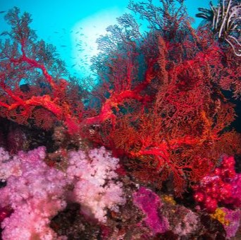

La Grande Barrière de Corail perd une grande partie de sa biodiversité et de
sa splendeur, autrefois uniques au monde. Cette destruction menace les
écosystèmes marins et les communautés qui en dépendent.
Les récifs coralliens sont en grave danger à l’échelle mondiale,
principalement à cause du réchauffement climatique, qui entraîne le
blanchissement des coraux et leur mort. La pollution marine, notamment les
plastiques et les produits chimiques, étouffe ces écosystèmes fragiles. De
plus, la surpêche et l’acidification des océans perturbent leur équilibre,
menaçant la biodiversité qu’ils abritent.